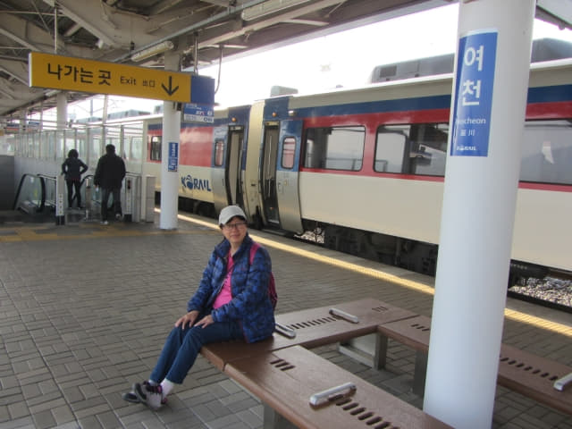

4.7.2017 (星期五)
偶然在網上看到一張漫山紫色杜鵑花的壯麗照片, 彷如人間仙境, 便深深的被吸引著, 好不容易才搜尋到這地方的名稱, 在網上有關這地方的資料非常貧乏, 只是簡簡單單的數十字介紹, 都是從韓國旅遊網站翻譯過來的, 至於交通和登山路線, 更是完全沒有。在完全缺乏資料下, 曾一度想放棄前往, 但越是困難, 越是激勵我的好奇, 最後將僅有的零零碎碎資料拼湊, 加上推敲, 便恃着心口的「勇」字出發, 這地方便是韓國當地人的秘景 — 位於麗水半島的靈鷲山 (영취산)。
這可能是第一個靈鷲山登山的中文遊記, 很想和大家分享我當時看到漫山粉紅色海洋的興奮心情, 也希望所有朋友也有機會到訪這人間仙境。
前兩天韓國氣象廳的中期天氣預測都維持全羅南道未來幾天下雨, 本以為極大機會要放棄靈鷲山這登山行程, 但昨晚韓國氣象廳突然傳來好消息, 麗水明天天氣預測: 「上午天陰, 下午轉晴」! 不可以再等了, 不知後天的天氣會否又轉壞, 這是一個絕好的機會, 便馬上決定今天往這韓國春天旅程重點之一的靈鷲山。
早上六時半起床, 連忙拉開窗簾看看, 天空放晴, 精神情為之一振, 這時才真真正正的安了心。梳洗完畢, 往一樓餐廳, 原來已經有四位來自瑞典的住客正在吃早餐。
吃完早餐, 返回房間收拾一些隨身攜帶的用品及旅遊資料, 於上午八時走出賓館, 開始今天精彩難忘的行程。按計劃, 我們是搭乘早上 8:32 的無窮花號火車往麗川站 (여천역)。從順天往麗川站的火車, 有 KTX 和無窮花號, KTX 的票價是 8,000韓元, 而無窮花號只需2,600韓元, 我們的選擇? 不用說啦嘛!
順天站 全羅線火車往 麗川站 上午時刻表 ( KTX 8,000韓元、 無窮花號 2,600韓元)
7:41 → 7:54 (KTX)
**8:32 → 8:46 (無窮花號)
9:56 → 10:09 (KTX)
11:18 → 11:32 (KTX)
11:37 → 11:51 (無窮花號)
12:35 → 12:49 (KTX)
12:42 → 12:56 (無窮花號)
走出賓館, 步行一會便抵順天火車站, 買了兩張 8:32 往麗川站的無窮花號火車車票, 每位是 2,600 韓元。
買了車票, 便按標示走往6號月台。早上的火車站大堂和月台只有廖廖幾位旅客, 十分冷清。
我們的座位在3號車卡, 按月台上標示在這裡等候便對了。
全羅線無窮花號火車於上午八時三十分駛來月台停靠。登上了3號車卡, 車廂內只有幾位乘客, 十分舒適的。
麗水．麗川站
無窮花號火車在順天站停靠了一會, 準時在早上午八時三十二分開出, 於早上八時四十五分便抵達麗川站, 行車時間只是十三分鐘。
